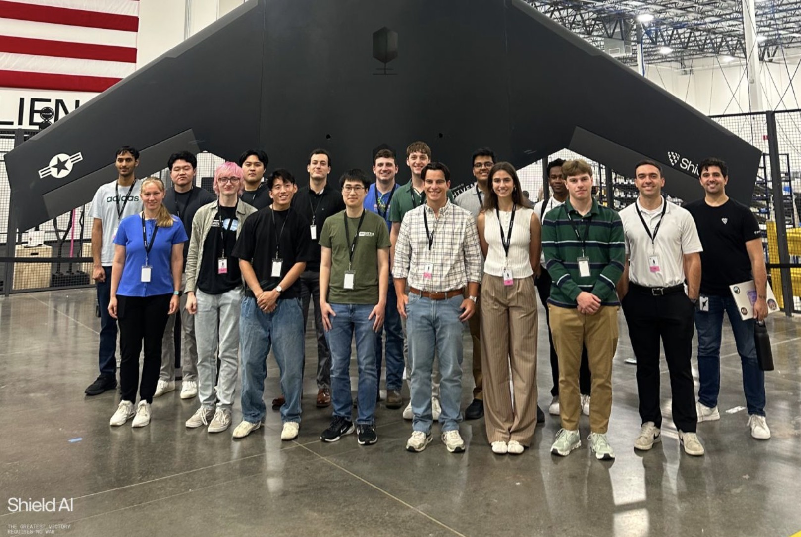

EE Hardware Test Engineer Intern
During my 12-week internship at Shield AI in summer 2026, I supported test engineering for hardware used in autonomous flight platforms. My core responsibility was designing a production test rack that tests multiple Devices Under Test (DUTs) in parallel. Confidentiality limits what I can share about specific programs.

The internship gave me a much deeper appreciation for the technical rigor behind hardware test, from fixture design and data acquisition to root-cause debugging. It also taught me the project-management discipline it takes to bring a system from concept to production, including the persistence and cross-team advocacy needed to stay on schedule.
Of all my project experiences to date, this internship was the most formative. I was surrounded by exceptionally talented, driven engineers who brought both technical depth and genuine enthusiasm to their work every day, and being immersed in that environment fundamentally reshaped how I think about my own career.
Watching my peers move fluidly between circuit-level debugging and system-level design showed me exactly the kind of engineer I want to become — and it's what pushed me to commit fully to hardware over software heading into my senior year. I'm walking away from this experience with a clear sense of direction, a renewed drive to sharpen my hardware skills, and enormous gratitude for the team that made this internship so impactful.